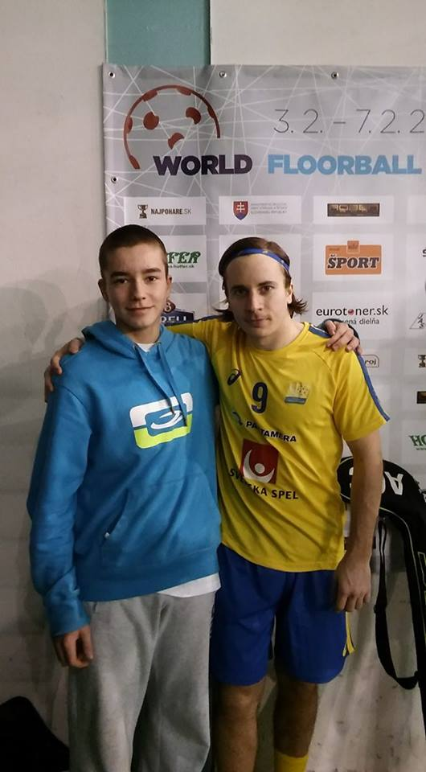

IBF Falun’s Alexander Galante Carlström holds on to the award he got last year as the world’s greatest player. The 29-year old has a shot that’s completely unmatched. For several seasons he’s been scoring a crazy amount of goals and is despite his age already the best goal scorerIBF Falun’s Alexander Galante Carlström holds on to the award he got last year as the world’s greatest player. The 29-year old has a shot that’s completely unmatched. For several seasons he’s been scoring a crazy amount of goals and is despite his age already the best goal scorerIBF Falun’s Alexander Galante Carlström holds on to the award he got last year as the world’s greatest player. The 29-year old has a shot that’s completely unmatched. For several seasons he’s been scoring a crazy amount of goals and is despite his age already the best goal scorerIBF Falun’s Alexander Galante Carlström holds on to the award he got last year as the world’s greatest player. The 29-year old has a shot that’s completely unmatched. For several seasons he’s been scoring a crazy amount of goals and is despite his age already the best goal scorerIBF Falun’s Alexander Galante Carlström holds on to the award he got last year as the world’s greatest player. The 29-year old has a shot that’s completely unmatched. For several seasons he’s been scoring a crazy amount of goals and is despite his age already the best goal scorerIBF Falun’s Alexander Galante Carlström holds on to the award he got last year as the world’s greatest player. The 29-year old has a shot that’s completely unmatched. For several seasons he’s been scoring a crazy amount of goals and is despite his age already the best goal scorerIBF Falun’s Alexander Galante Carlström holds on to the award he got last year as the world’s greatest player. The 29-year old has a shot that’s completely unmatched. For several seasons he’s been scoring a crazy amount of goals and is despite his age already the best goal scorer.
